Simple and Easy Recipes
Posts on 'ghee'
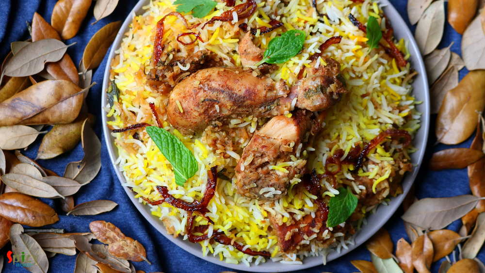
Nonveg Recipe
Feb 23, 2019
I guess you all, who follow my blog, already know that we have a 'thing' for Biriyani. Be it with chicken / mutton / prawn we are always ready to enjoy. I've already posted Kolkata style biriyani recipe which is much easier than Hyderabadi style as you need to have full confidence on timing and proportions. In Kolkata we make the chicken with gravy first and then give 'dum' with cooked rice, where ...

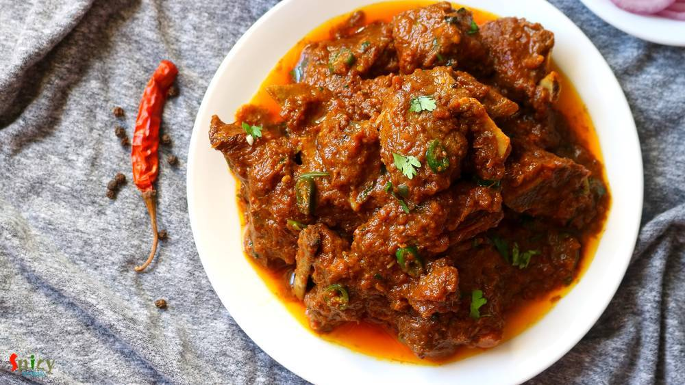
Nonveg Recipe
Feb 14, 2019
Mutton korma is an old school and popular non veg main course item from Old Delhi. Any korma recipe has onion and yogurt based sauce, some even add nut paste also. Last weekend I had a party in my house. Among all the foods, the main attraction was Mutton Korma. Korma is very rich itself. Always serve this with light rice item or naan. Do give it a try and let me know how it turned out for you.
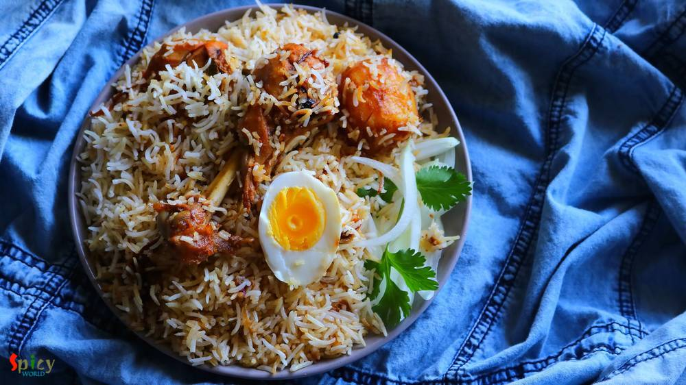
Nonveg Recipe
Sep 21, 2018
Kolkata style Chicken Dum Biriyani is one of the tastiest variety of biriyani recipe, which has awesome flavors and juicy chicken pieces. You can have it as it is or with Chicken Chaap / Korma / Kosha. I also have other Biriyani recipes in my blog. Cooking Biriyani is time consuming, also the more you practice the more you will get better at this. The process is lengthy but with few tricks and tip ...
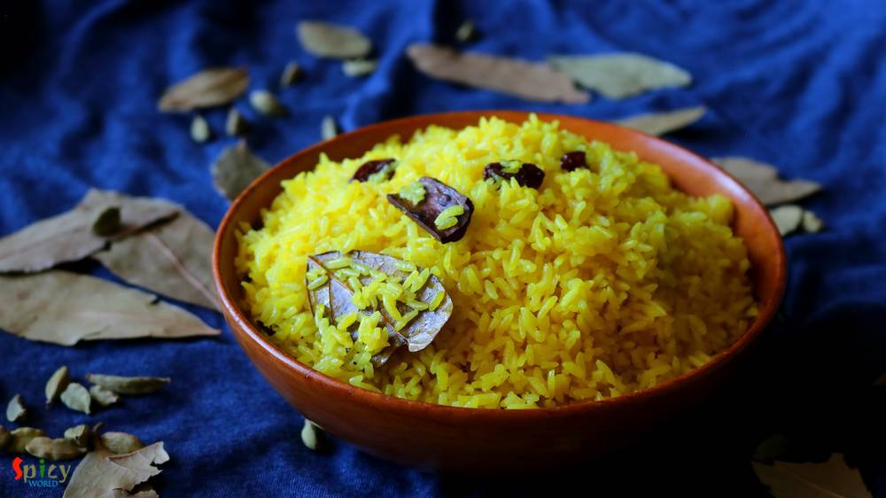
Veg Recipe
Aug 10, 2018
This is a traditional bengali dish. 'Basanti' means yellow colour. You can also call this Sweet (mishti) Pulao. My mom make this in many gatherings along with Macher Kalia or Mutton Kosha. I have literally no words about the combination. This is the must combination 'he' wants on his birthday. But once we had this with Chicken Dopyaza (already on blog) and that combo was also so good! Give it a tr ...
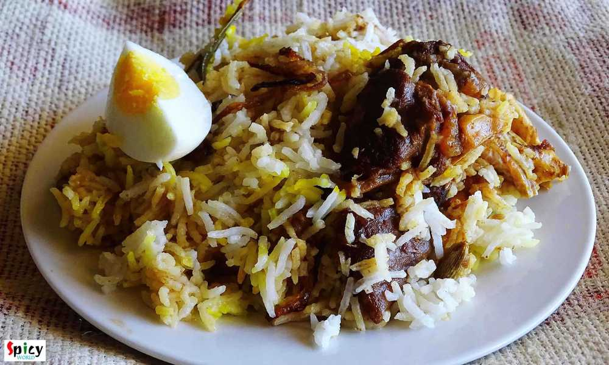
Nonveg Recipe
Jul 2, 2019
We always have a grand feeling whenever we hear the name 'Biriyani'. One of the most popular Indian dish accross the world is now Biriyani. Kolkata style Mutton Biriyani has a very unique aroma, juicy mutton pieces, long grain fragrant Basmati rice, soft potatoes and a piece of egg - everything in one plate. Whenever you are visiting Kolkata, do taste the Roshogolla, Mishti doi and Mutton Biriyani ...
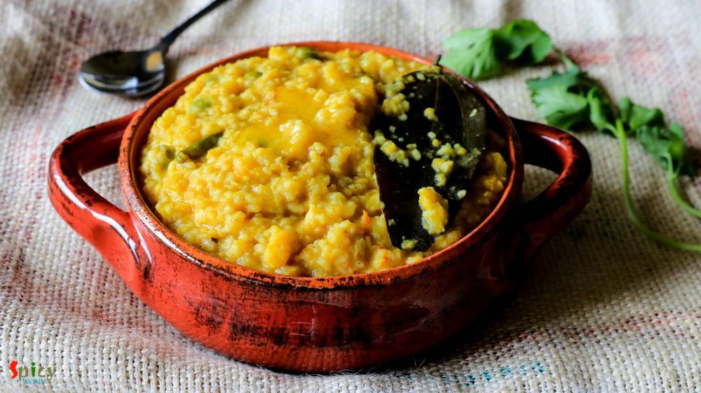
Veg Recipe
Jun 23, 2016
After scorching heat of summer, first few days of monsoon are my favourite. In those days I don't like to stand in front of the gas for long time, because in the meantime you can enjoy the rain by sitting beside the window. I think you guys have already guessed that I am talking about one pot meal - they are so easy to cook. One of the famous one pot meal in Bengal is 'khichuri' / khichdi. I have ...

Nonveg Recipe
May 16, 2016
This is a very popular dish from Mughlai cuisine in India. In this recipe medium size mutton pieces are cooked in a white, creamy, nut based rich gravy. 'Rezala' goes best with naan, biriyani, roti or paratha. I have already posted several recipe on 'rezala'. The dish has a very unique taste. It is neither very spicy nor very sweet. I made this last week and thoroughly enjoyed it with plain rice. ...
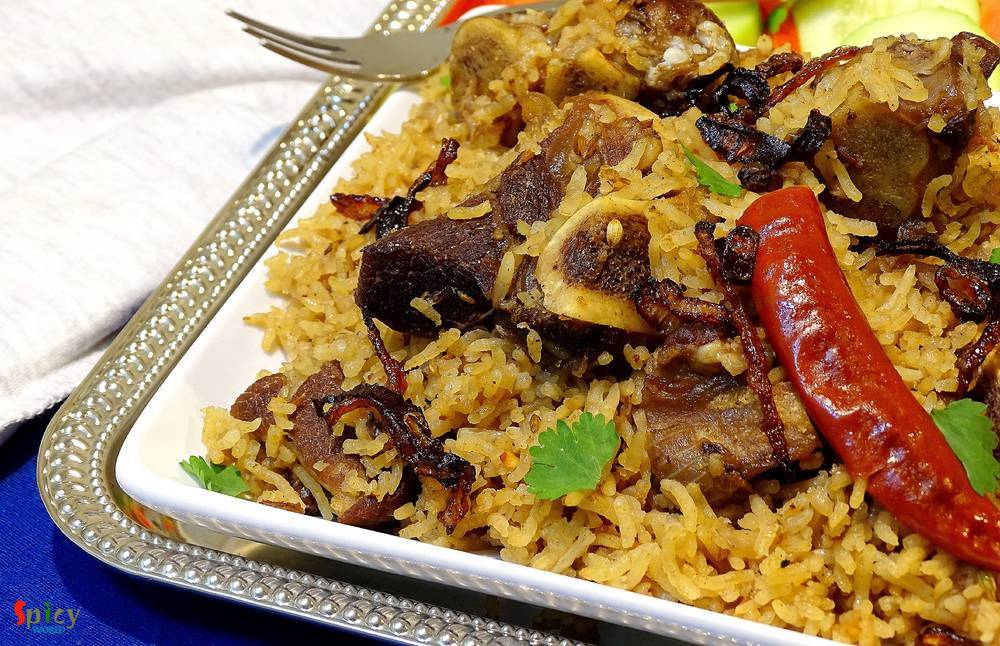
Nonveg Recipe
Feb 19, 2016
A good Indian maincourse dish is always paired well with various types of pulao or many types of bread. But sometimes pulao itself can become a very rich and heavy dish. Yes, I am talking about 'mutton pulao'. In this recipe, the rice will be cooked with the tasty mutton stock (yakhni). That is why this type of pulao become rich itself. We both are very much fond of 'yakhni pulao'. You just have t ...
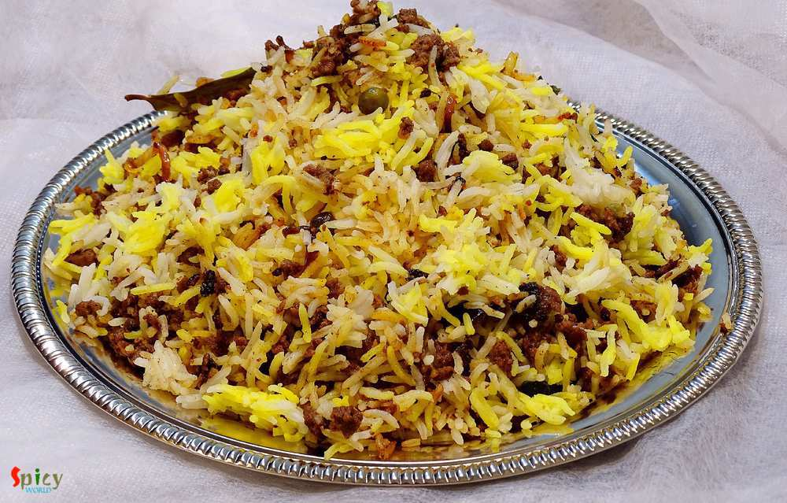
Nonveg Recipe
Mar 31, 2016
In India "biriyani" is a very popular dish and we both are crazy about any type of 'biriyani'. You can find plenty of variations in biriyani. The process is a little bit of lengthy but the result is unbelievable. Last friday I took an attempt on making Keema Biriyani, after the entire process I realized it is the easiest one. That is why I am sharing this recipe with you because it is one of the t ...

Veg Recipe
Feb 8, 2016
I am a big fan of different types of 'pulao'. One of my favorite pulao is 'Jeera Rice' because of it's saltiness and spicyness. It goes very well with many types of veg and non veg curry. The recipe is very simple and easy. You can also give 'jeera rice' in any adult's lunch box with dry curry, every combo will become great. Try this in your kitchen and let me know how it turns out.
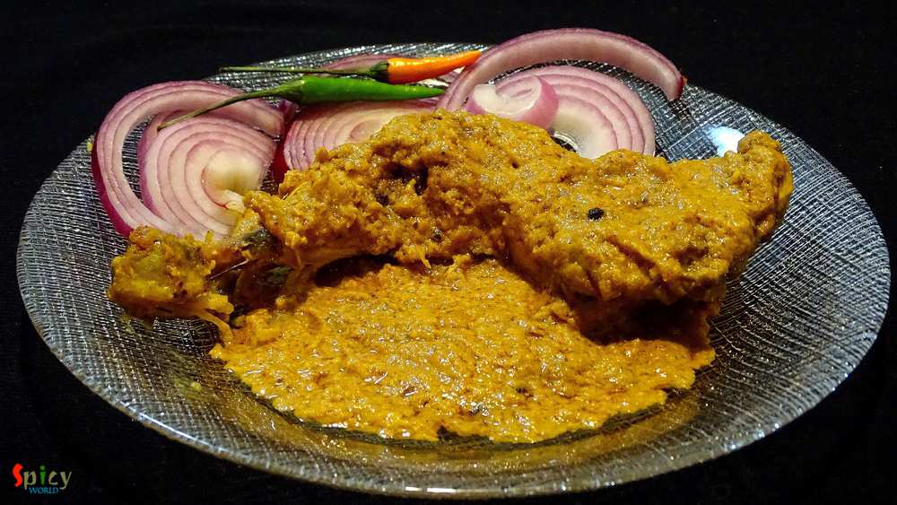
Nonveg Recipe
Jan 7, 2016
One of the most famous dish from Mughlai cuisine is 'Chicken Chaap' and the taste is unbeatable. You will find the actual taste and flavour in few restaurants in Kolkata. After researching for a long time on the authentic recipe of Chicken chaap, here is the way how I made it. This recipe will give you the exact flavour of restaurant style Chaap. This dish should not be eaten as regular meal. It h ...
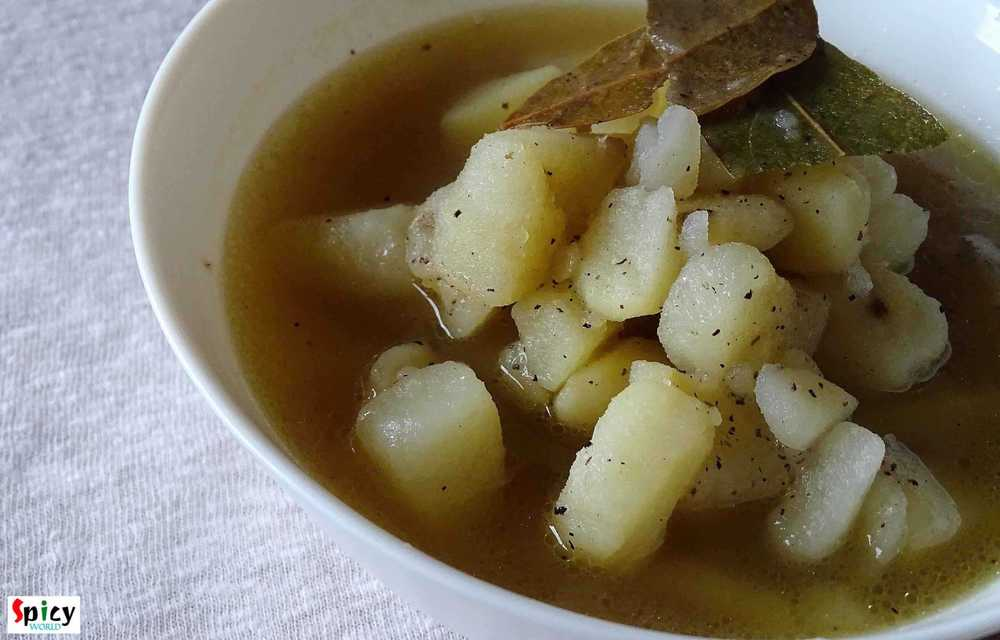
Veg Recipe
Dec 20, 2015
From childhood, whenever I got attacked by cough and cold, my mom used to feed me this 'aloo (potato) moricher torkari' along with some puffed rice / 'muri'. Its nothing but a simple potato curry with mild flavors of 'ghee' and 'morich' / black pepper. According to my mom, the heat of black pepper goes well against cold and cough. Magically my neck always felt better after finishing this mom-made ...
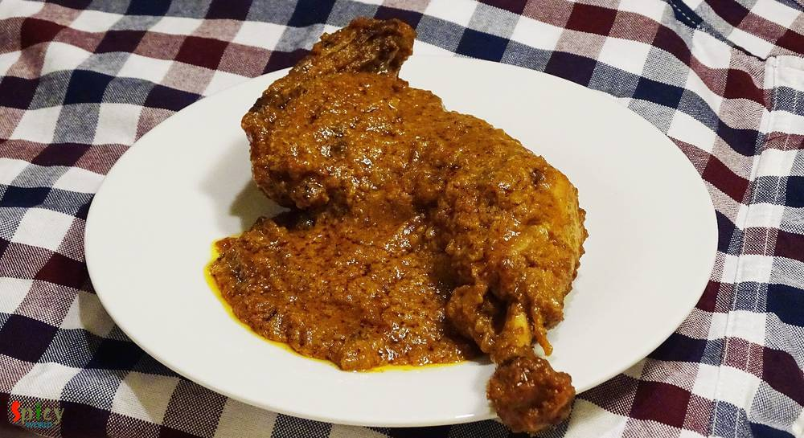
Nonveg Recipe
Nov 21, 2015
When an inch of oil or ghee floats upon gravy, yes its 'mughlai nawabi dish'. 'Nawab' means king. This category of curries have nice colored, rich, thick, creamy gravy. 'Chicken Korma' is my favourite one. You can easily eat this curry once in a month along with 'biriyani', 'pulaao', 'butter naan' or 'rumali roti'. Do not put this kind of food in your regular diet because you have to make or eat k ...
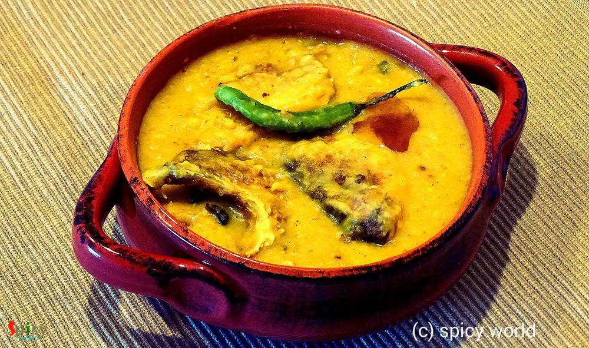
Nonveg Recipe
Nov 9, 2015
This lentil soup is one of the traditional food in Bengal. Last weekend I had two fish heads in my fridge. I am personally not too much fond of plain fish head curry. So, I made this dish and it came out really perfect like 'biyebari'. In most of the bengali wedding this dish is must for lunch and everybody loves it. I ate the home made version of this daal twice from my mom. Those times I really ...
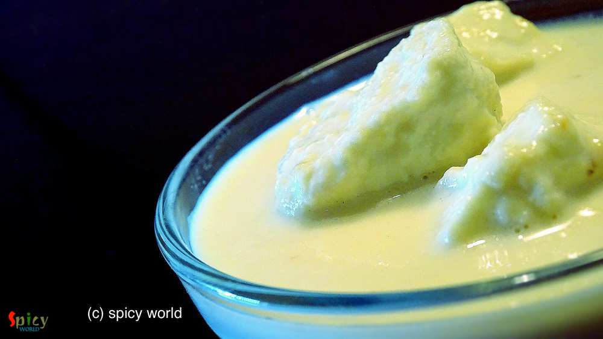
Veg Recipe
Oct 25, 2015
This recipe happened by mistake last week. I know what you are thinking!! But I will never regret about this mistake because it turned out delicious. Let me tell you the story first. Last week I took an attempt to make 'sondesh', but the taste came out very less sweeter. I got panicked and immediately called my only life saver 'mom'. She adviced me to follow the process of 'rosmalai'. In rosmalai ...
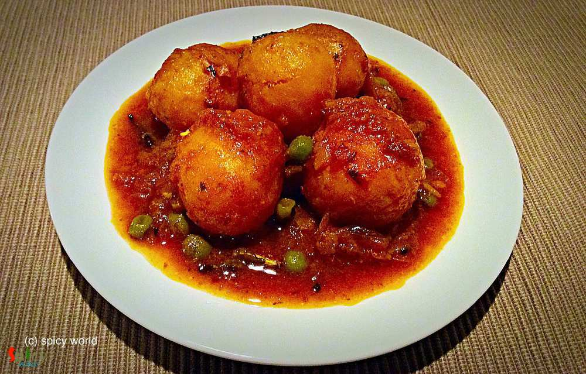
Veg Recipe
Oct 18, 2015
We all love to eat 'aloor dom' along with 'luchi' or 'kochuri'. This is our comfort food. It also goes very well with 'pulao' or 'fried rice'. This one is my mom's recipe. She make the tastiest aloor dom ever. Yesterday I tried this recipe and it came out perfectly.Just give it a try.
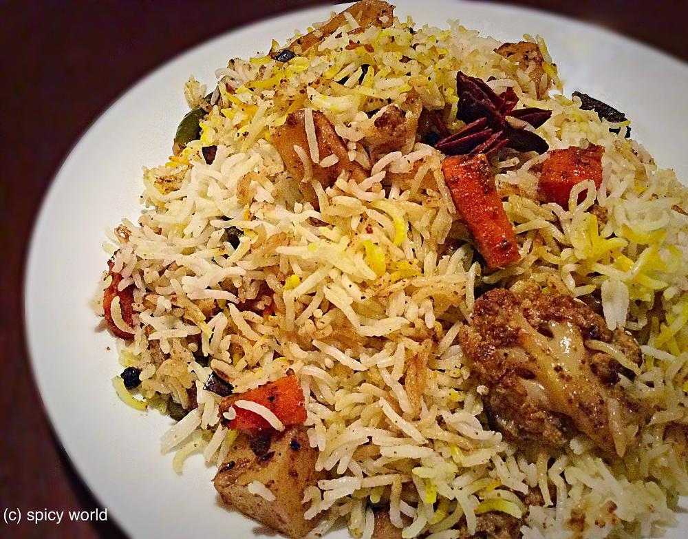
Veg Recipe
Oct 4, 2015
This dish dont need any explanation. Because its 'Biriyani'. This is the most popular dish in India. The vegetarian version of biriyani is also very tasty Just give a try and impress your family.

Veg Recipe
Oct 1, 2015
When you are in a mood of healthy eating, just give it a try ... You will find peace during eating this khichdi because it has some mild flavours and healthy ingredients. This is a meal which you can not ignore.
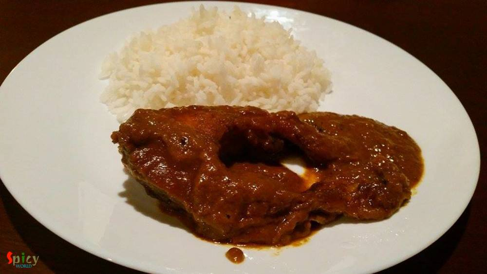
Nonveg Recipe
Sep 23, 2015
In Bengali's weekdays lunch menu fish has to be there. There is a say 'mache-bhate-bangali' indicates our common meal is fish curry and rice. This is a special dish for party, occasions or gatherings. Macher kaliya goes very well with sweet pulao, fried rice or even plain rice.
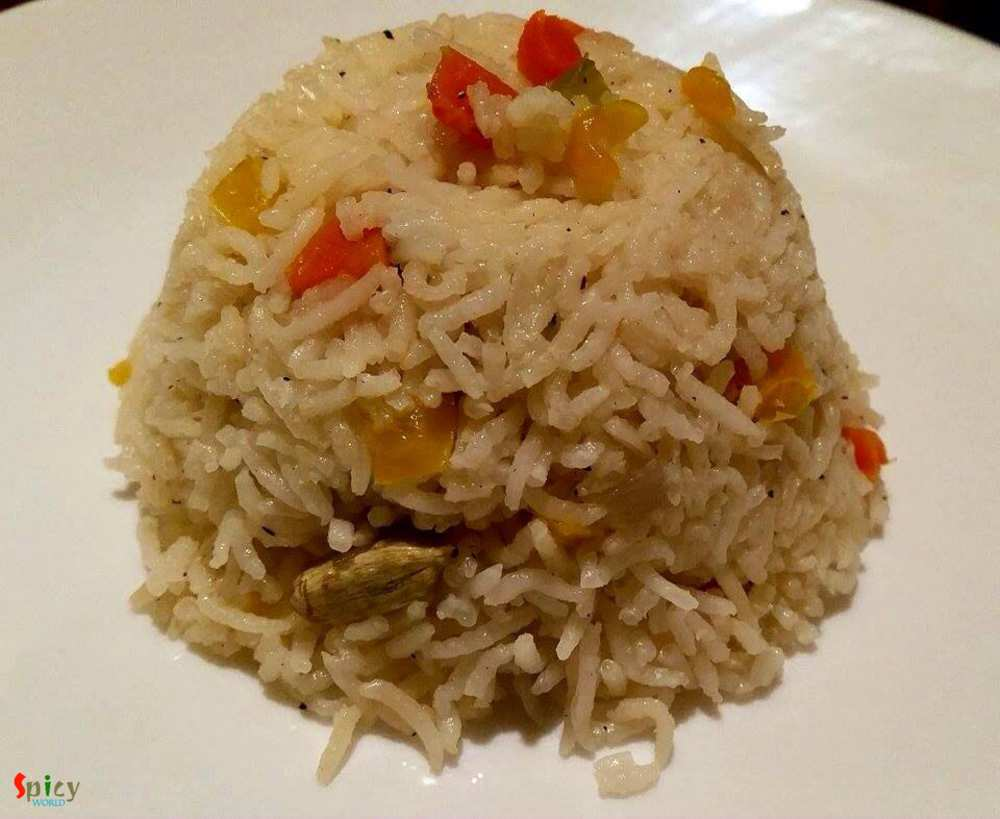
Veg Recipe
Sep 17, 2015
There are many varities of fried rice you can make like 'chinese style', 'indian style', 'fried rice with sauce' etc. This recipe is about indian style. This is a complete meal with vegetables. You can add chicken, egg, prwan, mushroom in this dish. You will love this dish.